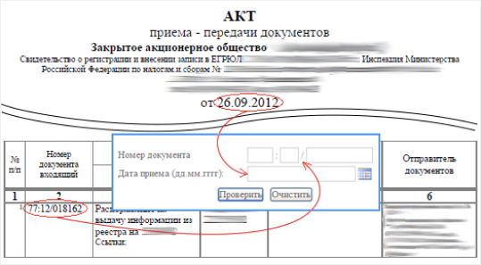

//= templates/header.html
<div class="container">
	<nav class="breadcrumb-wrapper" aria-label="breadcrumb">
		<div class="breadcrumb-opacity"></div>
		<ol class="breadcrumb">
			<li class="breadcrumb-item"><a href="#">Главная</a></li>
			<li class="breadcrumb-item"><a href="#">Акционерам</a></li>
			<li class="breadcrumb-item"><a href="#">Онлайн-сервисы</a></li>
			<li class="breadcrumb-item active" aria-current="page">Проверка состояния документа</li>
		</ol>
	</nav>
</div>
<section>
	<div class="container">
		<h3>Проверка состояния документа</h3>
		<div class="row">
			<div class="col-12 col-xl-8">
				<div class="section-title">Заголовок об услуге</div>
				<div class="text-regular">
					Вы можете проверить статус документа, переданного в АО «Новый регистратор».
					Введите входящий номер и дату приема документа.
				</div>
				<form>
					<div class="form-row">
						<div class="col-12 col-xl-5">
							<div class="form-group">
								<label for="docNumber">Номер документа</label>
								<input type="text" id="docNumber" class="form-control" placeholder="__:__/_">
							</div>
						</div>
						<div class="col-12 col-xl-5">
							<div class="form-group">
								<label for="docDate">Дата приема</label>
								<select class="form-control" id="docDate">
									<option>дд/мм/гггг</option>
									<option>2</option>
									<option>3</option>
								</select>
							</div>
						</div>
					</div>
					<div class="form-row">
						<div class="col-12 col-xl-4">
							<button type="submit" class="btn btn-filled">проверить</button>
						</div>
						<div class="col-12 col-xl-6">
							<div class="form-text">
								Подсказка - входящий номер и дата приема документа есть на выданном Вам акте приема-передачи документов:
							</div>
						</div>
					</div>
				</form>
				<div class="row">
					<div class="col-12 col-xl-10">
						
					</div>
				</div>
			</div>
			<div class="col-12 col-xl-4">
				//= templates/feedback-service.html
			</div>
		</div>
	</div>
</section>

//= templates/footer.html